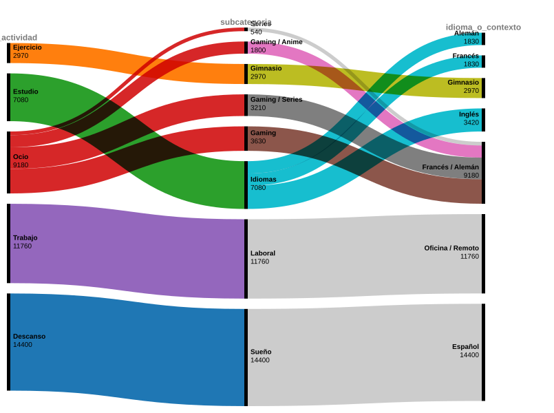

¿Cómo fluye y se distribuye el volumen total de tiempo desde las áreas principales hacia sus subcategorías e idiomas/contextos?
Este diagrama Alluvial permite visualizar la jerarquía y el volumen de tiempo acumulado a lo largo de los 40 días de registro. Muestra cómo las 5 áreas macro (Trabajo, Estudio, Descanso, Ocio y Ejercicio) se ramifican hacia sus subcategorías específicas y finalmente hacia los idiomas o contextos de ejecución (Inglés, Alemán, Francés, Español, Oficina/Remoto). La anchura de los flujos es directamente proporcional al total de minutos invertidos.
